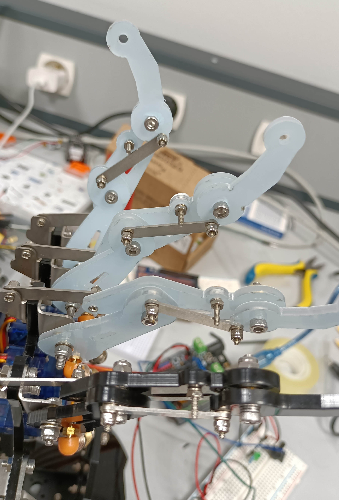
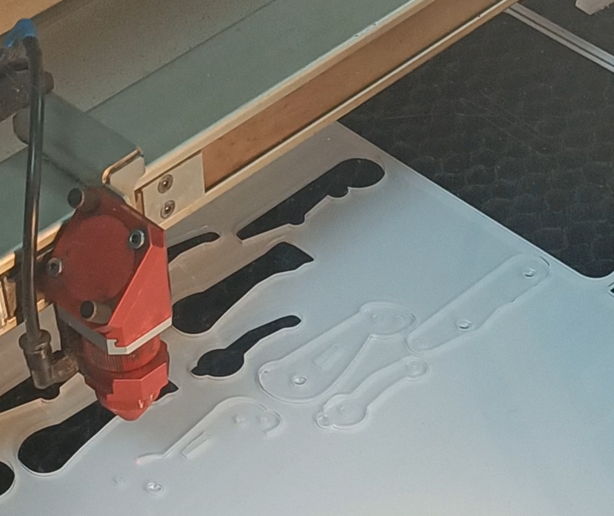

Main robotique
Main robotique commandé par impulsion musculaire développé dans le cadre du DU (Diplôme universitaire) robotique en partenariat avec le parcours santé. Il fallait modéliser, créer les pièces, les assembler et faire le code permettant de rendre mobile la main grâce à des capteurs d'impulsion musculaire.


Pour faire ces différentes étapes nous avons utilisés plusieurs techniques. Nous avons utilisé le logiciel en ligne OnShape pour modéliser les doigts de la main que nous avons ensuite découpé au laser. La partie des capteurs a été travaillé par ceux faisant partie du groupe santé. Nous avons récupéré les signaux de ces capteurs pour les traiter avec une carte Arduino et son langage homonyme.